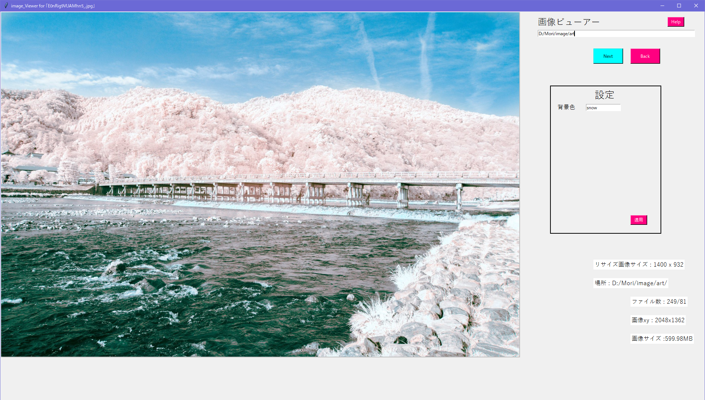

Simple 画像ビューア
画像ビューアをダウンロードSimple 画像ビューアとは？
画像を表示するプログラム。
画面はこんな感じ。
何ができる？
選択したフォルダの中にある画像を表示できます。
機能
1.画像を表示する
2.画像ファイルを開く
3.画像サイズ、画像のXとY、画像の場所がわかる
4.フォルダ内画像数を表示する
使用動画
詳細
言語 : Python3
使用ライブラリ : os, requests, math, tkinter, subprocess
from tkinter import font
from tkinter import messagebox
from PIL import Image, ImageTk
ちなみに
このプログラムの本来の目的は「サイトから一括保存する画像を選択する」事。
けど、サイトの画像を表示するのはいろいろ難しくてとりあえず画像ビューアにして完成した。
Source Code
Full ImgViewerのソースコードImgViewerのソースコード
一個のファイルで二つのモードを実装することもできるのですが、、、いや別に面倒とかそんなんじゃないですよ!